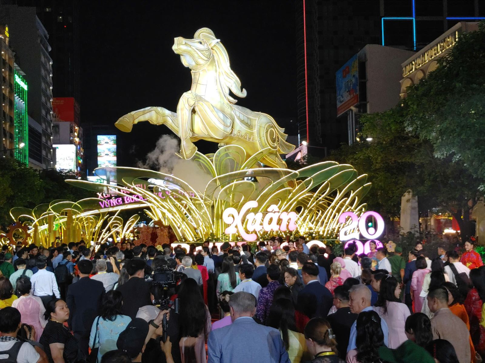
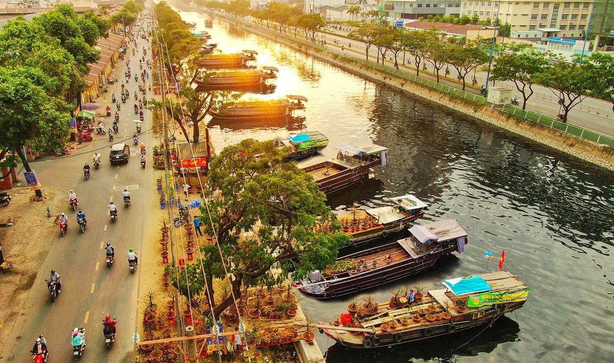
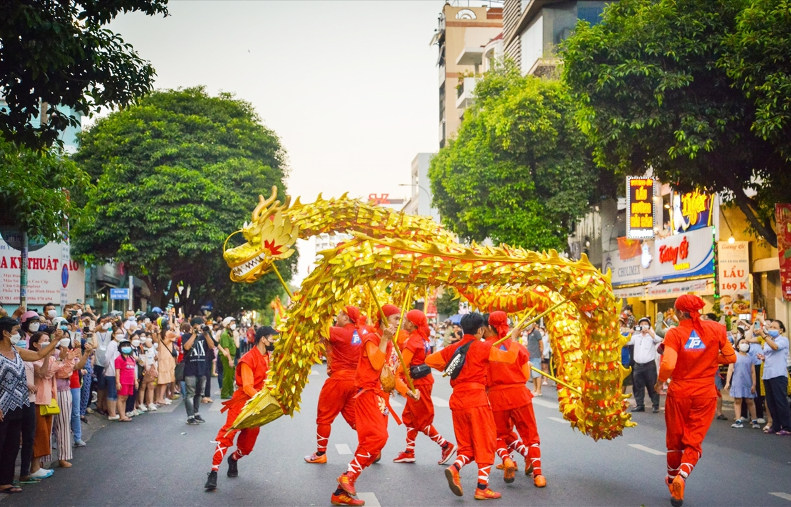

Biểu tượng không thể thiếu của Tết Sài Gòn. Mỗi năm đường hoa được trang hoàng theo một chủ đề linh vật riêng, thu hút hàng triệu người mặc áo dài xúng xính đến du xuân, chụp ảnh.
Tại Bến Bình Đông (Quận 8), những chiếc ghe chở đầy hoa cúc, vạn thọ, mai vàng từ miền Tây cập bến, tạo nên khung cảnh chợ Tết nhộn nhịp, rực rỡ mang đậm chất sông nước giữa lòng đô thị.
Khu vực Quận 5 rộn rã tiếng trống múa lân trong những ngày đầu năm. Các đoàn lân đi đến từng nhà hàng, gia đình để biểu diễn chúc phúc, xua đuổi tà ma và mang lại may mắn, tài lộc.
